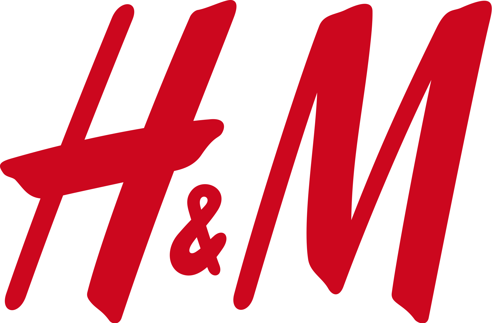

Grupo Upama
Nacimos en 1980 como un pequeño taller familiar. Hoy somos un grupo empresarial con tres divisiones especializadas y presencia en toda España.
Upama nace como un pequeño taller familiar en Madrid, especializado en la fabricación artesanal de cierres de tijera metálicos.
La empresa amplía su capacidad productiva e incorpora maquinaria para la fabricación en serie de cierres metálicos enrollables.
Obtención del Marcado CE, la certificación ISO 9001 de calidad y la ISO 14001 de gestión medioambiental. Consolidación como referente del sector.
El grupo incorpora Metalmatic, especializada en puertas automáticas de cristal y puertas seccionales, ampliando la oferta de soluciones de acceso.
Tres empresas, un único equipo. Fabricación, lacado, automatización y mantenimiento bajo el mismo paraguas, con clientes como Apple, Movistar, H&M y McDonald's.
Cada empresa del grupo cubre una parte del proceso. Juntas ofrecen una cadena completa: fabricación, acabado, automatización y mantenimiento sin intermediarios.
Fabricación, distribución e instalación de cierres metálicos enrollables y puertas automáticas.
Empresa matriz del grupo. Diseña, fabrica e instala cierres metálicos enrollables en acero galvanizado, inoxidable y aluminio, con anchuras de hasta 12 metros. Gestiona la red comercial, el servicio técnico y las urgencias 24 horas.
Lacado y acabado de perfiles metálicos.
División especializada en el lacado y tratamiento superficial de perfiles metálicos. Ofrece una amplia gama de colores y acabados para los cierres y puertas fabricados por el grupo, garantizando durabilidad y resistencia a la corrosión.
Puertas automáticas de cristal y seccionales.
Incorporada al grupo en 2015 para cubrir la demanda creciente de soluciones de acceso automatizado en cristal. Especializada en puertas correderas de cristal para comercios y oficinas, y en puertas seccionales para garajes e industria.
Cada proyecto es distinto. Nos adaptamos a las necesidades concretas de cada cliente, sin soluciones genéricas.
Incorporamos nuevas tecnologías y materiales para ofrecer siempre las mejores soluciones del mercado.
Fabricamos con los materiales y procesos que garantizan la durabilidad y el correcto funcionamiento a largo plazo.
Certificados ISO 14001. Gestionamos nuestros procesos minimizando el impacto ambiental en cada fase productiva.
El grupo Upama cumple con los más exigentes estándares de calidad, seguridad y gestión medioambiental reconocidos a nivel europeo e internacional.
Todos nuestros productos cumplen con la normativa europea de seguridad y libre comercialización en el Espacio Económico Europeo.
Sistema de gestión de calidad certificado. Garantía de procesos estandarizados y mejora continua en fabricación e instalación.
Certificación de gestión medioambiental. Compromiso con la reducción del impacto ambiental en todos nuestros procesos productivos.
Confían en nosotros

Cuéntanos qué necesitas. Te respondemos en menos de 24 horas con una valoración inicial sin compromiso.